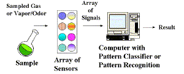

An "electronic or artificial nose" is an instrument, which comprises a sampling system, an array of chemical gas sensors with differing selectivity, and a computer with an appropriate pattern-classification algorithm, capable of qualitative and/or quantitative analysis of simple or complex gases, vapors, or odors. An "electronic tongue" uses an array of liquid sensors. The artificial "chemical" senses include taste and olfaction.
One cannot discuss the "electrochemical nose" without first discussing the human or biological nose and the factors that led to the development of artificial olfaction technology. Of all the five senses, olfaction uses the largest part of the brain and is an essential part of our daily lives. Indeed, the appeal of most flavors is more related to the odor arising from volatiles than to the reaction of the taste buds to dissolved substances. Our olfactory system has evolved not only to enhance taste but also to warn us of dangerous situations. We can easily detect just a few parts per billion of the toxic gas hydrogen sulfide in sewer gas, an ability that can save our life. Olfaction is closely related to the limbic or primitive brain, and odors can elicit basic emotions like love, sadness, or fear. In fact life-saving nauseous revulsion is at least as ancient and universal in the mammalian world as the animal that takes most exquisite advantage of its existence, "Mephitis mephitis", the striped skunk!
This article is about the electronic nose and specifically about electronic noses based on electrochemical sensors ("electrochemical nose"), the class with which we are most experienced. The entire genus of electronic noses includes those with conductive polymers, polymer composite, quartz microbalance, surface acoustic wave, calorimetric, and other classes of sensors. In this discussion, we will simply refer to an "E-nose" to indicate artificial olfaction, since many modern E-noses are constructed with more than one class of sensor in them. These latter instruments are said to employ "heterogeneous" sensor arrays. Many sources of multi-parameter chemical data including infrared spectrometers, gas chromatographs, and mass spectrometers have been used to identify odors and therefore called E-noses. So, even though the above definition is broad, it may not be broad enough to describe this entire field of technology. However, you can be the judge of the adequacy of the definition after reading about the subject below.
| Fig. 1.The "Biological Nose" (by Mother Nature, patent pending). |
|  |
| Fig. 2.The basic design of the "Electronic Nose". |
{kind=link}
{kind=link}
The term, "electronic nose" or "E-nose" has come into common usage as a generic term for an array of chemical gas sensors incorporated into an artificial olfaction device, after its introduction in the title of a landmark conference on this subject in Iceland in 1991. The term E-nose is not pejorative. There are striking analogies between the artificial noses of man and the "Bio-nose" constructed by Nature. Figure 1 illustrates a biological nose and points out the important features of this "instrument". Figure 2 illustrates the artificial electronic nose. Comparing the two is instructive. The human nose uses the lungs to bring the odor to the epithelium layer; the electronic nose has a pump. The human nose has mucous, hairs, and membranes to act as filters and concentrators, while the E-nose has an inlet sampling system that provides sample filtration and conditioning to protect the sensors and enhance selectivity. The human epithelium contains the olfactory epithelium, which contains millions of sensing cells, selected from 100-200 different genotypes that interact with the odorous molecules in unique ways. The E-nose has a variety of sensors that interact differently with the sample. The human receptors convert the chemical responses to electronic nerve impulses. The unique pattern of nerve impulses are propagated by neurons through a complex network before reaching the higher brain for interpretation. Similarly, the chemical sensors in the E-nose react with the sample and produce electrical signals. A computer reads the unique pattern of signals, and interprets them with some form of intelligent pattern classification algorithm. From these similarities we can easily understand the nomenclature. However, there are still fundamental differences in both the instrumentation and software! The Bio-nose can perform tasks still out of reach for the E-nose, but the reverse is also true. It is interesting to note that biological noses are all electrochemical noses in the sense that they use nerve voltage pulses or potentiometry, and ion currents or amperometry, to transmit signals in the body.
What makes the E-nose better? What advantages does it already possess? Our human nose is elegant, sensitive, and self-repairing, but the E-nose sensors do not fatigue or get the "flu". Further, the E-nose can be sent to detect toxic and otherwise hazardous situations that humans may wish to avoid. Sensors can detect toxic CO, which is odorless to humans. And humans are not well suited for repetitive or boring tasks that are better left to machines. No wonder the E-nose is sometimes referred to as a "sniffer". However, the human nose is still preferred for many situations like the selection of a fine wine or to determine the off-odor of recycled plastics! In addition, the exquisite sensitivity of the dog's nose for sniffing out drugs or contraband at an airport is legendary already. These skills have not yet been matched by any currently designed E-nose!
{kind=link}
We can now provide a newer and more up-to-date definition of the E-nose. Operationally, the E-nose is a "sensing system" or instrument that consists of a sample conditioning inlet system, a gas sensor array, and pattern-classifier software operating in a computer. A suitable instrumental definition can also be given. An electronic nose is an instrument comprised of three parts: (a) a sampling system, (b) an array of chemical gas sensors producing an array of signals when confronted with a gas, vapor, or odor, and (c) an appropriate pattern-classification system. The E-nose is typically applied to the qualitative or quantitative analysis of gases, vapors, odors, or complex chemical mixtures and has a conveniently simple output, such as a variety of coffee, or the identity of a solvent vapor. It is truly a separate class of analytical instruments. A very recent version has been called a "micronose" (Figure 3) because it is tiny and uses sensors made by a microfabrication technique similar to that used to manufacture semiconductor chip devices.
Clearly, the array of sensors can be of any type and, if they are liquid-phase sensors (pH or ion-selective electrodes, for example), the instrument has been called an "electronic tongue!" Some such instruments have been built and used to "taste" samples that range from potable water to tomato juice. These instruments, based on arrays of chemical sensors, come in many varieties using all sorts of high-tech approaches that include the limits of microfabrication and the combinatorial chemistry sciences. Even gas chromatographs, infrared spectrometers, and mass spectrometers have been used for data generation in some versions of the E-nose, but the term more aptly conjures up the notion of a device powered by tiny chemical sensors and applied to the detection, identification, and quantification of odors or other complex analytes.
Historical comments
{kind=link}
{kind=link}
Recently, we have seen an increased interest in chemical gas sensor arrays for food, beverage, medical, military, automotive, packaging, and other applications. The original E-nose concept evolved from ongoing research in both analytical applications of chemical sensors and our understanding of human olfaction. The analytical power of sensor arrays was first appreciated in work that started in1980 at the Argonne National Laboratory near Chicago, IL. The United States Coast Guard supported the development work. At this time, the USCG, as part of the US Department of Transportation, was responsible for hazardous materials emergency response. The idea proposed was the development of a new sensing device that could detect, identify, and measure the wide variety of chemicals and mixtures transported by rail, ship, and truck anywhere in North America. This team of scientists (Figure 4) and many student collaborators conspired to construct the first heterogeneous gas sensor array instrument, the CPS-100 (Figure 5). The resemblance to biological olfaction was not known to us at the time, and we coined the term "CPS", or "chemical parameter spectrometry", because patterns generated by the sensor arrays resembled spectra, and, like spectra, could be used to characterize a substance and fingerprint it for later identification.
Meanwhile, a group of scientists led by K. Persaud in the UK were approaching the sensor array problem as a means to understand the biological process of olfaction. They created a mimic of the array of biological gas sensors in the human nose with an array of three electrochemical metal oxide (MOX) sensors. They were able to discriminate 20 odorous pure compounds and complex essential oils from one another using this array. Following work in the mid 1980s in the USA included an array of MOX sensors at Carnegie Mellon University and an array of mechanical SAW sensors at the Naval Research Laboratories, both designed to detect hydrocarbons. In Japan, fish freshness testing was being investigated with MOX sensor arrays. The development of this sensor array technology continued on three continents in the 1980s. However, the E-nose received a renewed expansion of interest after the 1991 NATO conference on this subject, a series of annual meetings on E-nose technology (the Eighth being in Washington, DC in March of 2001), and the new website and school for the E-nose sponsored by the European community.
When the sensor array idea was introduced in the early 1980s, there were several key scientific and technological advances that made it possible. Simultaneous progress in (a) low cost and high quality tiny chemical sensors (b) the microprocessor, specifically CMOS microprocessors that are low power and suitable for small portable instruments, and (c) the development of pattern recognition and classification algorithms for chemistry problems were needed for the E-nose to be a reality. Further inspiration was provided by our evolved understanding of human olfaction as an array of gas sensors in the nose.
Analytical significance
The terms "electronic nose" and "electronic tongue" are popular and descriptive but something of a technical misnomer. The term chemical sensor array is more generally applicable term for this field because it doesn't confuse the fact that these systems are typically not sensing the same chemicals that cause human "odors" or "tastes". The human perceptions may be due to an entirely different chemical presence in the samples than the chemicals that are detected by the sensors in a sensor array. This is obvious when one considers that the E-nose often contains a sensor that is sensitive to carbon monoxide and the human nose cannot respond to this compound at all. The reverse also applies. However, chemical sensor arrays can be nose like and tongue like in certain respects. For example, the rancidity of olive oil has been traced to the presence of one or two specific aldehydes that are formed during spoiling. These are readily detected by human olfactory systems as well as by chemical sensors. The E-nose and the human nose both effectively discriminate rancid olive oil from good oil. The E-nose can also create different patterns depending upon the concentration of aldehydes in the oil. This is an example of the analytical capability of the E-nose being similar to the human nose and is a simple example that can be explained fully on a molecular basis. Very few such problems involve such simple differences, however.The E-nose has the interesting ability to address analytical problems that have been refractory to traditional analytical approaches. The volatiles from coffee, for example, contain at least 640 different compounds. These interact in such a way that no single compound or group of compounds is associated with the subjective assessment of flavor or odor. The flavor/odor of "good" coffee cannot be traced to a specific molecular origin or simple list of chemicals by traditional analytical techniques like gas chromatography or mass spectroscopy. One analyzes "good" coffee and "bad" coffee as described by coffee experts and finds differences in concentrations of hundreds of the compounds in the samples. Today, it is still not possible to add or subtract these known compounds according to a rational system, and make the "bad" coffee "good" or vice versa. We do not have a sufficient compositional understanding at the molecular level of the gustatory terms "good" and "bad" coffee. Yet the E-nose can learn the fingerprints of coffees and easily tell these different coffees apart. A statistical relationship between the array patterns for "good" and "bad" can be easily found. Somewhere within the complex response of the sensors in the array is encoded the difference between "good" and "bad" in the chemical fingerprint, just as it is in the complex response of the millions of receptors in our nose. We still do not know exactly the molecular basis for this difference but we can definitely say that array response vectors are different and statistically related to the quality "good" or "bad" coffee. Frequently no such chemical marker(s) or specific molecular cause can be found for the quality of many perfumes or the off-odor of a group of recycled plastic parts. In such cases, the determination of flavor or odor is performed by an olfactory panel, that is, a panel of skilled and trained human noses (attached to highly paid human beings). The response of a chemical gas sensor array or electronic nose can be statistically related to such properties as odor, flavor, explosive, or even bacterial content. Thus, the E-nose offers an opportunity to develop an instrumental approach for the human analytical endpoints like odor, flavor, hazardous, contaminated, spoiled, and the like.
Design and function of an E-nose
| Fig. 6. Structure of an electronic nose. |
{kind=link}
How does it work? A schematic is shown in Figure 6 wherein the guts of the early electrochemical nose mentioned above are pictured schematically. The operation of the device pumps the sample and records the signals from four electrochemical sensors at four inlet operating conditions over about a minute. This produces 16 responses and these are recorded for four substances: methyl isocyanate, hydrogen cyanide, nitrogen dioxide, and carbon monoxide. These signals were recorded at several different concentrations in the working range of the sensors (about 0 to 1000 parts per million). One can tell the amount of the material by the strength of the signals $150; the stronger the responses, the higher the concentration.
When the maximum signal in an individual pattern is set equal to 1.0, so that all of the patterns are the same for a given sampled gas and independent of concentration, the fingerprints as displayed in Figure 6 result. The signals for the sensors, when taken together, form a pattern or fingerprint that is easily recognized by the eye as different for each chemical. A simple computer program, that treats each set of sensor responses as a vector in n-dimensional space (where "n" is the number of sensor channels) can compare the vectors and tell the difference. In this simple demonstration of the E-nose approach, the vectors are normalized to take out the concentration information; simple normalization requires only setting the largest signal to unity and scaling the other signals accordingly. The normalized vectors and stored as a collection of reference patterns in the memory of the computer.
To identify an unknown, the vector for an unknown gas is measured and normalized. Each element in its vector is subtracted from the corresponding element in the reference vector. The numerical length of the difference vector will be small if the patterns are very similar and large if they are different. Each vector is compared to the unknown; the closest one may be the identity of the unknown. If none of the vectors are close to each other, the unknown is not in the library of reference vectors and is unknown to the E-nose. The E-nose can only identify those compounds and mixtures that you have taught it, just like your own nose! But it can learn new "smells" simply; this is often called calibration when it is done for ordinary instruments. This is a simple description of the so-called nearest-neighbor approach, which was implemented in our first E-nose designed in 1982, and is still a powerful pattern classification method. Later, we adopted neural networks for the identification of grain odors. This was also one of the first examples in which the E-nose was used for sniffing out biologically-caused contamination. The power of the E-nose, to extend the sensors' ability to perform both qualitative and quantitative analysis in a single step, is unique.
The analytical power of the E-nose is due to the large dimensionality of sensor arrays in what is called their "feature space". This gives the array the power to encode such information as the "odor/flavor" of coffee, using the relative signals of an array of differently selective chemical sensors. The feature space is created by the diversity of the chemical responses of the sensors. The "dimensionality" of feature space is large for even small sensor arrays and large arrays can represent a very large number of different situations (1021 or more). Herein we must add a word of caution. The statistical link of the array responses to the desired endpoint is subject to frequent misinterpretation, and caution should be used in applications of the electronic nose (or tongue) to analytical problems. One must perform the correct number of experiments and design the system to insure that the response of the E-nose and the analytical results are truly related. This is the same caution that applies to all instrumental analyses. For all its power, the E-nose approach is not exempt from this fundamental principle of analytical chemistry.
Amperometric gas sensors (AGS)
The AGS is described here as a typical example of an electrochemical detection element in an artificial nose. Amperometry is an electroanalytical technique that encompasses coulometry, voltammetry, and constant-potential techniques and is widely used to identify and quantify electroactive species in liquid and gas phases. For liquid phase analytes, the electrodes and analytes are immersed in a common electrolyte. In contrast, application of amperometry to gas phase analytes involves a unique gas-liquid/solid interfacial transport process that frequently controls the response characteristics and analytical performance of the AGS.
| Fig. 7. Schematic structure of an AGS. Carbon monoxide is sensed by oxidizing to carbon dioxide. |
{kind=link}
Amperometric gas sensors are a class of electrochemical gas sensors sometimes called voltammetric, micro-fuel cell, polarographic, amperostatic, or other names. The common characteristic of all AGSs is that measurements are made by recording the current in the electrochemical cell between the working and counter electrodes as a function of the analyte concentration. Figure 7 illustrates an amperometric sensor consisting of working, counter and reference electrodes. The analyte is typically reacted electrochemically, that is oxidized or reduced, and this produces a current at the working electrode. This reaction is performed typically at a fixed potential controlled by a potentiostatic circuit. The AGS differs from other electrochemical sensors, such as potentiometric sensors, in which the potential at or near zero current flow is the recorded signal, or conductometric sensors, in which the measured signal is a change in impedance. The AGS produces its current when exposed to a gas/vapor containing an electroactive compound because the analyte diffuses into the electrochemical cell and to the working electrode surface and thereon participates in an electrode reaction that produces a current. The current produced can be directly related to the rate of reaction taking place at the electrode surface. The current is described by application of Faraday's Law, relating the amount of charge passed in the cell to the number of grams of a substance of reacted at an electrode. Assuming there are no other reacting species in the solution, the observed current is directly proportional to the amount of analyte, that is supplied to the working electrode, and this in turn can be related to the gaseous analyte concentration.
Using the potentiostat, the electrochemical cell can be operated at different electrode potentials and this can change the measured values of current. The AGS is made reactive toward different analytes by choosing different potentials, different working electrode catalysts, and different analytes. It is usually preferable that a sensor works in the limiting current region in which the magnitude of the sensor signal is practically independent of the electrode potential. In theory, the limiting current region can be achieved in any case when the rate-determining step is a step prior to electron transfer. The rate of electrode reaction may be limited by the rate of diffusion through a membrane or a capillary that is placed somewhere between the gas stream containing the analyte and the catalyst layer of the electrode. The limiting current is directly proportional to the gaseous concentration in some convenient units like ppmv (parts per million by volume). The amperometric gas sensor is one of the most widely used sensors for toxic gas detection (that is, for carbon monoxide, nitrogen oxides, hydrogen sulfide, sulfur dioxide, oxygen, and the like) in industrial hygiene and safety applications.
The commercial E-nose
Despite some very interesting analytical capabilities, the road to commercial success for the E-nose has been rocky at best. The early customers of sensor arrays and E-noses have often complained of poor performance that was often expressed as poor reproducibility or stability. The capabilities of the early commercial instruments were often overstated, and touted applications were not restricted to the "odor and flavor" organoleptic problems that were intractable to other methods. Frequently, the E-nose was used to compete with established analytical techniques and methods, or it was misapplied because calibration and interpretation problems were not well understood for this instrument. Depending upon the application, many of these same issues remain a concern today and may limit E-nose success unless addressed and solved. Nevertheless, the E-nose can perform some very complex analytical tasks not yet addressed by even the largest and most expensive systems and is correctly the subject of research, lively debate, and new applications. Challenges lie ahead for E-nose technology and problems with stability, calibration, and the identification of patterns in changing backgrounds must be solved for widespread applications to unlock the potential of this technology.
| Fig. 8. Modern electronic noses. |
{kind=link}
The earliest known commercial instrument, called the "Sniffer", made by Bacharach, Inc. in the 1960s, had only one sensor operating in one mode and while it was used for odor sniffing, it was not a true electronic nose. It was not until sensor arrays were incorporated into instruments that the E-nose could be developed. Some pictures of modern E-noses are illustrated in Figure 8. The MOSES instrument pictured with autosampler is made for the laboratory bench, as is the IIT E-nose and the Applied Sensor 3300. The MOSES typically has 20 sensors but can handle up to 64 and provides a good way to perform research and to explore the appropriateness of different sensor classes for a specific, defined problem. The benchtop E-noses address the problem of thorough analytical method development. The portable systems, some which are hand held, are made for field identification. They can store certain patterns for compounds and then identify these substances if encountered in the area sampled. More information can be found in the web pages of the individual companies and those of the European NOSE network.
These instruments are available to perform comparisons of unknown gas, vapor, and odor samples with a calibration library that can be provided by the manufacturer and sometimes created by the user. The commercial E-noses use a variety of chemical sensor classes. Since each of these classes operates on a different principle, the resulting E-nose will have different sensitivity and selectivity and, therefore, advantages and limitations toward a given analytical problem. All E-noses are not created equal, just like the human nose, and should be selected or configured to fit each problem. The sampling system must effectively and efficiently present the analyte(s) to the E-nose in a repeatable and sometimes concentrated form. Data processing algorithms using statistics, fuzzy logic or neural networks must also be selected with an eye to solving specific analytical problems.
Exemplary applications
| Fig. 9. Example signals plot (formaldehyde test). |
| Fig. 10. E. COLI as a function of ENTEROBACTER over a growth period. |
{kind=link}
{kind=link}
We can provide an illustration of how this might be done. The vapors above a bacterial culture are collected and a short "sniff" is introduced into the E-nose. As the bacteria grow, they eat specific compounds in the medium upon which they grow and they emit specific metabolites. These are partitioned along with all other chemicals in the liquid medium and the vapors above the medium. So the "sniff" contains a unique set of volatile compounds that are representative of the medium and bacteria. As they pass the sensors, they produce a pattern of responses for which an example is shown in Figure 9. These signals can then be analyzed by the computer, treated as a pattern and displayed in a principal components plot as illustrated in Figure 10. In Figure 10, each bacterial culture is replicated fourfold for each growth time (1 hour, 2 hours, 3 hours, etc.) and hence 4 replicate measurements. Replicate samples are illustrated in Figure 10 within each circle. In this example, a statistical method of data display, principal component analysis is used that represents the difference in the patterns in n-dimensional feature space in two dimensions as a function of the first two principle components of the data set. In Figure 10, the data points for the replicates of each of the time points are grouped in a circle that represents the 95% confidence limits. The patterns generated by the vapors above a bacterial culture are different for different growth times as well as for different species. With the E-nose we can tell the age of the culture and the type of bacteria in this controlled laboratory experiment. It is still not possible to do this with "wild" samples collected from any field environment and not yet possible to do this with small populations of bacteria, such as those found in infections in medical practice. But the promise of the method to identify and quantify important vapor samples like these illustrates the tremendous future of the E-nose. If it is possible to quantify and identify bacterial with tiny chemical sensors, then inexpensive instruments that are small and portable could have this immense power. Research continues to overcome the barriers to such field application of the E-nose in this and other applications.
| Fig. 11. Discrimination of beers using the E-nose! |
{kind=link}
A second important analysis is illustrated in the non-medical sport of beer sniffing, where the E-nose can tell a light from a regular beer (Figure 11). This illustrates the potential of applications in the food and beverage industry and puts to rest forever the notion that all beers are alike.
So the science of the E-nose presses on. Problems being addressed range from determination of the quality of perfumes, wines, and apple juice, to the detection of infectious diseases. New technology is inspiring devices that produce the visual imaging of smells of various chemicals and mixtures. Some day we will see the "Tricorder" of the popular TV show Start Trek. It may be a version inspired by the modern E-nose!
Related articles
Electrochemical blood glucose testElectrochemical sensors
Jaroslav Heyrovsky and polarography
The past, present, and future of electroanalytical chemistry
Further reading
- http://nose.uia.ac.be/review/default.asp Review of electronic noses: sponsored by the European "NOSE" organization, this is the largest and most complete collection of links to electronic nose sites on the Web. It includes both academic and commercial sites.
- http://olfac.univ-lyon1.fr/sysolf/lso-frame.html Another comprehensive collection of URLs, in French but easily used without knowledge of the language (hint: nez electronique means just what you think it means). This site also contains the full text of some important research papers in both English and French.
- http://www.inapg.inra.fr/ens_rech/siab/asteq/elba/sommelen.html A small but informative site by Dr. C. DiNatale, one of the foremost researchers in the electronic nose field.
- http://www.leffingwell.com/olfaction.html A quick and up-to-date introduction to biological olfaction.
- A Nose for Business, I. Greenberg, "MIT's Technology Review" Vol. 102, No. 4, pp 62-67, July-August 1999.
Bibliography
- Sniffing Out the Truth: Clinical Diagnosis Using the Electronic Nose, A. K. Pavlou and A. P. F. Turner, "Clinical Chemistry and Laboratory Medicine" Vol. 38, pp 99-112, 2000.
- Electronic Noses: Principles and Applications, J. W. Gardner and P. N. Bartlett, Oxford University Press, Oxford, UK 1999. (Covers mainly gas sensors.)
- Olfaction: Making Sense of Scents, "Science" Vol. 286, pp 703-728, 1999. (A collection of articles on biological olfaction.)
- Current Trends in "Artificial-Nose" Technology, T. A. Dickinson, J. White, J. S. Kauer, and D. R. Walt, "Trends in Biotechnology" Vol. 16, pp 250-258, 1998. (A review.)
- The How and Why of Electronic Noses, H. T. Nagle, R. Gutierrez-Osuna, and S. S. Schiffman, "IEEE Spectrum" pp 22-38, September 1998. (A review.)
- Handbook of Biosensors and Electronic Noses: Medicine, Food, and the Environment, E. Kress-Rogers (editor), CRC Press, Boca Raton FL, 1997.
- Amperometric Gas Sensors, S. C. Chang, J. R. Stetter, and C. S. Cha, "Talanta" Vol. 40, pp 461-467, 1993.
- The Properties and Applications of Amperometric Gas Sensors, Z. Cao, W. J. Buttner, and J. R. Stetter, "Electroanalysis" Vol. 4, pp 253-266, 1992.
- Sensors and Sensory Systems for an Electronic Nose, J. W. Gardner and P. N. Bartlett (editors), Kluwer Academic Publishers, Dordrecht, Netherlands 1992. (The famous "Iceland Symposium" that marks the beginning of the worldwide research effort on the electronic nose.)
- Method for Detecting Toxic Gases, J. R. Stetter, S. Zaromb, and M. W. Findlay, U.S. Patent 5,055,266, 1991. (This and the following are the two key patents in early electronic nose technology.)
- Sensor Array for Toxic Gas Detection, J. R. Stetter, S. Zaromb, and W. R. Penrose, U.S. Patent 4,670,405, 1987.
- Selective Gas Detection and Measurement System, P. K. Clifford, U.S. Patent 4,542,640, 1985. (The earliest known patent on the use of gas sensor arrays to identify gases.)
- Monitoring of Electrochemically Inactive Compounds by Amperometric Gas Sensors, J. R. Stetter, S. Zaromb, and M. W. Findlay, Jr., "Sensors and Actuators" Vol. 6, pp 269-288, 1984.
- Analysis of Discrimination Mechanisms in the Mammalian Olfactory System Using a Model Nose, K. Persaud and G. Dodd, "Nature" Vol. 299, pp 352-355, 1982. (The early experiment to model the olfactory system with gas sensors.)
Other Resources
Listings of electrochemistry books, review chapters, proceedings volumes, and full text of some historical publications are also available in the Electrochemistry Science and Technology Information Resource (ESTIR). (http://knowledge.electrochem.org/estir/)